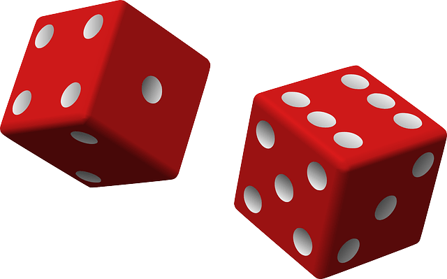
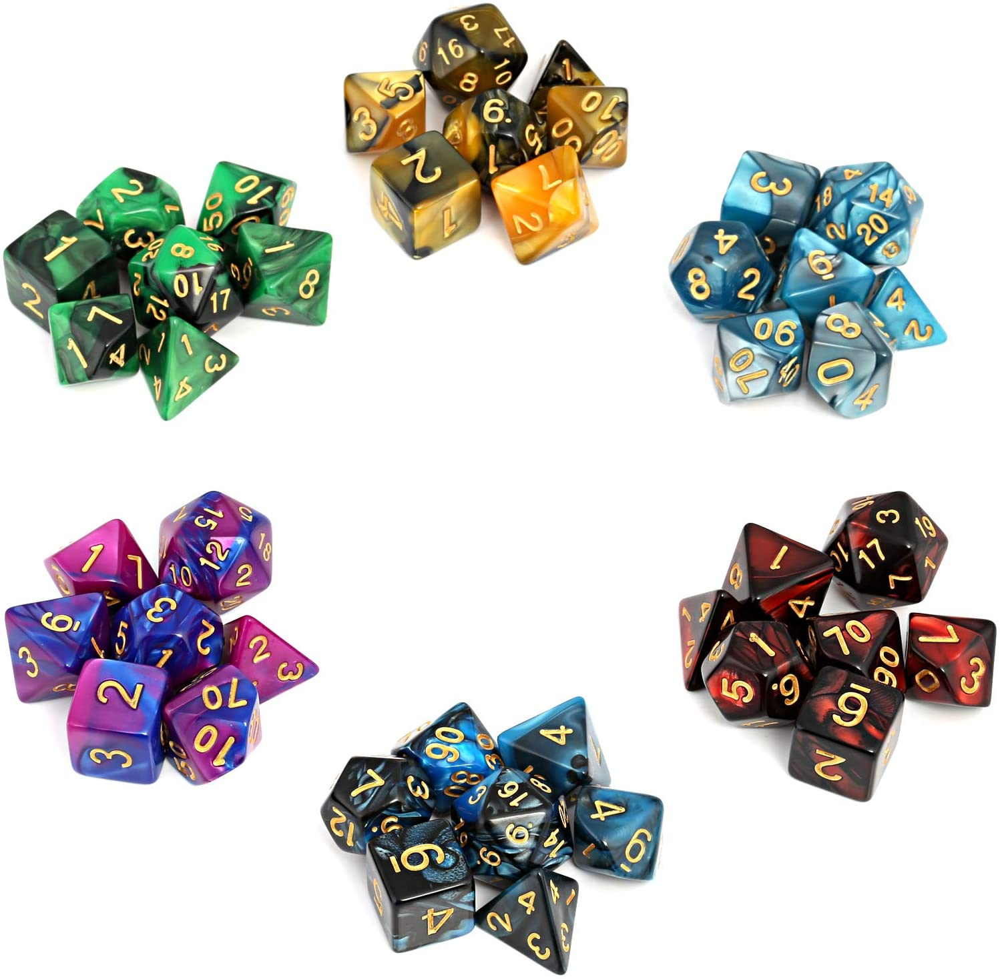
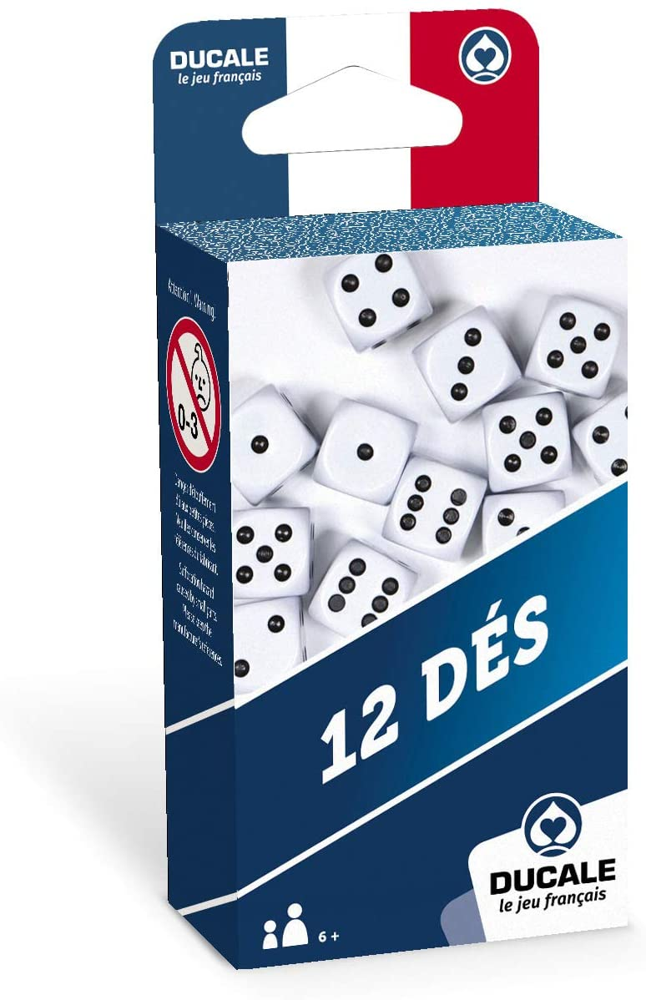

 Les dés
Simulation
L'histoire du dé
Un dé est un objet, généralement de petite taille et de forme cubique, qui permet de tirer aléatoirement un nombre ou un symbole parmi plusieurs possibilités.Les dés tirent probablement leur origine des os des chevilles
(spécifiquement l’astragale) d’animaux tels le bœuf. Il n’est pas possible de déterminer précisément l’apparition des dés et leur distinction des osselets, les écrivains antiques semblant confondre les deux jeux.
Il est certain en revanche qu’ils datent des temps préhistoriques. Leur présence dans des tombes anciennes de la vallée de l’Indus, des dés cubiques vieux de 4 300 ans y ont été retrouvés, semble pointer vers une origine
asiatique. À cette époque, la somme de faces opposées ne vaut pas encore systématiquement 71. Le jeu de dé est mentionné dans le Rig-Veda et l’Atharvaveda indiens
Les différents type de dés
Le dé classique
Les dé non cubique


Achat de dé

